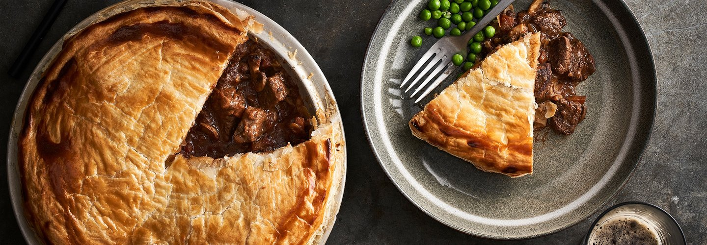

Wagyu & Mushroom Pie

Everyday is Pie Day with Wagyu!
Ingredients:
- 1 1/2lb diced Wagyu beef
- 2 1/2 Tsp fine salt
- 1 Small carrot - finely diced
- 1/4 Cup flour
- 1 Large onion - diced
- 2 Cloves garlic - finely chopped
- 1 cup red wine
- 14 oz can chopped tomatoes
- 2 tsp chopped fresh thyme
- 1 tsp chopped fresh rosemary
- 3 Tbsp Worcestershire sauce
- 1 Tbsp butter
- 1 1/2 Cups beef stock
- 2 1/2 Cups diced mushroom (your choice)
- 1 egg yolk
- 1 lb flaky puff, short crust
Directions:
- Preheat oven to 300°F. Season beef with salt and toss through the flour. Pan fry in batches until browned all over, and place in a casserole dish
- Fry onions, carrot and garlic in the butter, stir over a medium heat for five minutes, then add red wine. Boil until reduced by half then pour into casserole dish along with beef stock, tomatoes, herbs, Worcestershire sauce and mustard.
- Cover with a disc of baking paper (cartouche), press down onto the meat and liquids (this will help trap and develop the flavours as it cooks). Cover with a tight fitting lid and cook for 2.5 hours, remove from oven and allow to cool.
- In a large frying pan, cook the mushrooms in the olive oil on a very high heat until caramelized. Season generously with freshly ground black pepper. Remove and cool, then add to the cooked beef.
- Lightly grease a pie dish. Roll the pastry thinly, cut to shape and gently press into the dish. Fill with casserole mix.
- Cut the remaining pastry to form the lid, place on top, then seal by carefully pressing the edges into the base pastry, trim off excess pastry then pinch the edge to form a neat pattern all the way around.
- Preheat oven to 390°F. Whisk egg yolk with 1 tablespoon of water and a pinch of salt to make an egg wash. Sparingly brush a thin coat all over the top of the pie and edges. Poke small holes in the top of the pie with the tip of a sharp knife to allow the steam to escape. Bake for 40 minutes, or until golden brown.